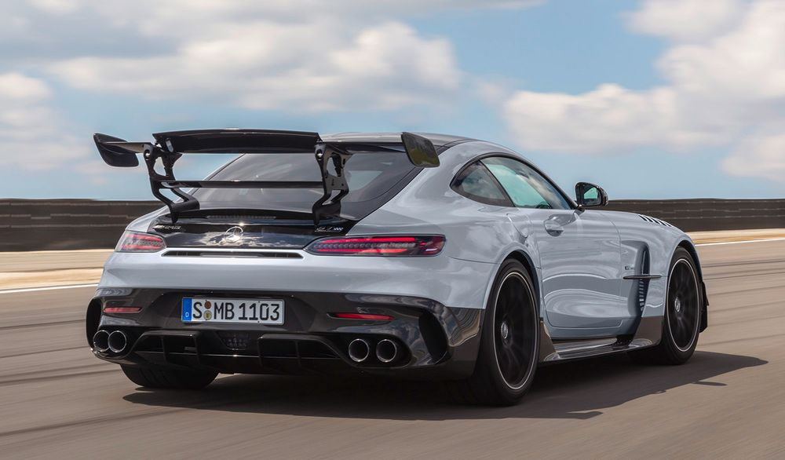
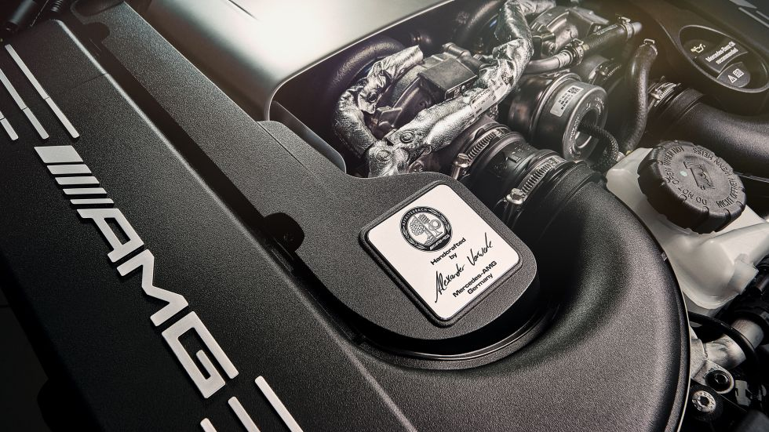

"The World of Driving Performance"
One Attitude.Your Choice
철학
AMG 세계에 오신 것을 환영합니다.
강력하고 독보적인 퍼포먼스를 제공하는 것. 이것은 Mercedes-AMG가 존재하는 이유이기도 합니다. 그 꿈을 실현하고 한계를 다시
뛰어넘는 것이 우리의 목표입니다. 우리는 이를 위해 한발 한발 더 나아갈 준비가 되어 있습니다.
[텍스트 출처 : https://www.mercedes-benz.co.kr/passengercars/the-brand/amg-brand/brand/amg-philosophy.module.html]

기술 너머에 AMG만의 철학이 있습니다
최상의 성능은 우연이 아닙니다. AMG 정신이 철저히 깃든 엔지니어링을 통해 제작됩니다. 우리는 항상 한계에 도전할 때 새로운 목표에 도달 할 수 있음을 잘 알고 있습니다. 또한 주어진 것을 당연한 것으로 받아들이지 않습니다. 한계는 사람이 만든 것이므로 뛰어넘을 수 있다고 생각합니다. 우리는 이러한 철학으로 퍼포먼스가 뛰어난 모터 스포츠와 일반 도로 주행용 자동차를 제작하고 있습니다. 우리는 이를 “드라이빙 퍼포먼스”라고 합니다."

단순히 도로에서 주행하는 것 뿐만 아니라 퍼포먼스를 보여줄 수 도 있습니다.
일반적으로 사람들은 도로를 A 지점에서 B 지점까지 이동하는 데 이용하는 시설로만 생각합니다. 하지만 퍼포먼스 팬들에게 도로는 그 이상의 의미를 지니고 있으며, 그들은 모든 커브 구간을 반갑게 생각합니다.
퍼포먼스 팬들은 능동적으로 주행합니다. 자동차의 힘을 아스팔트에 뿜어내고 이를 정교하게 제어하는 것을 즐깁니다. 그들에게 주행 다이내믹은 개성의 표현입니다.
Mercedes-AMG은 이러한 원칙에 따라 동력을 주행 다이내믹으로 전환합니다. 이를 위해 모든 서스펜션 시스템이 서로 완벽하게 최적화되어 있습니다.

One Man – One Engine. Mercedes-AMG의 고품질 수작업.
대량 생산과 달리 Mercedes-AMG에서는 전통적으로 R4, V8 및 V12 엔진을 "One Man – One Engine"의 철학에 따라 손으로 제작합니다. 한 명의 엔지니어가 각각 한 개의 크랭크 어셈블리를 조립하면서 엔진 블록에 크랭크 샤프트를 장착하는 일부터 캠샤프트 조립을 거쳐 배선 및 엔진 오일 주입에 이르기까지 전 과정을 책임집니다. 그리고 이것은 AMG 엔진 엠블렘의 엔지니어 서명으로 뚜렷한 흔적을 남깁니다.


"퍼포먼스 자동차"
강력한 시리즈형 4기통 엔진에서 최상의 12기통 엔진까지